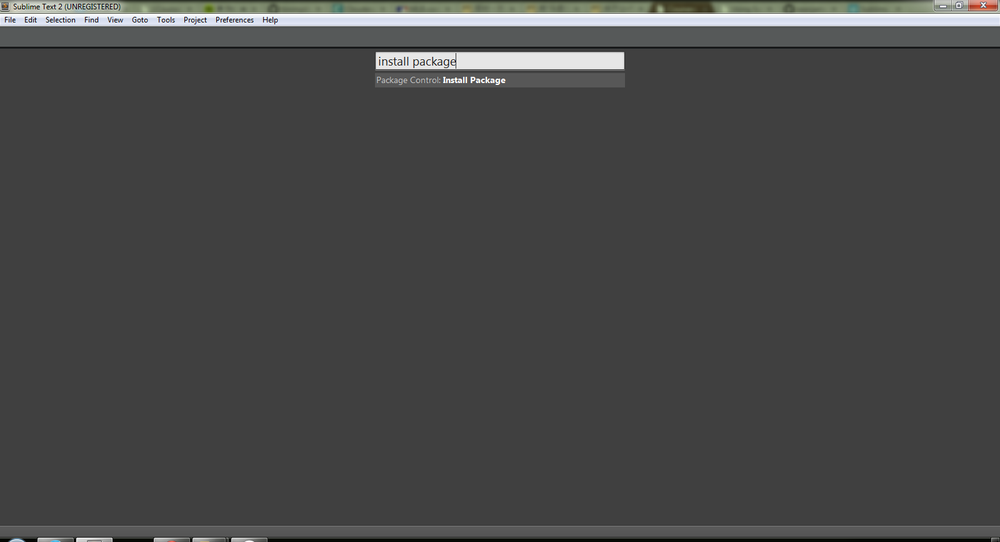
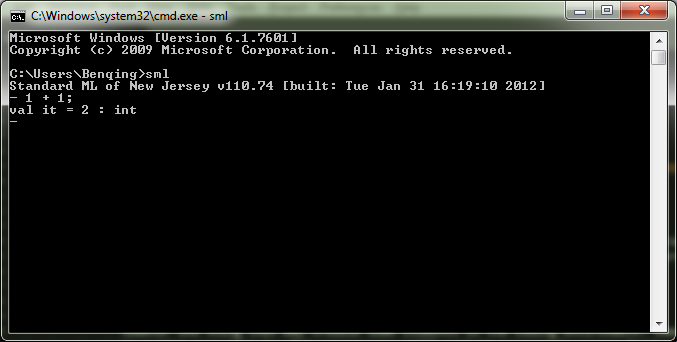
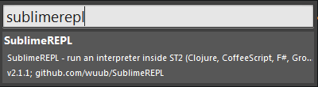
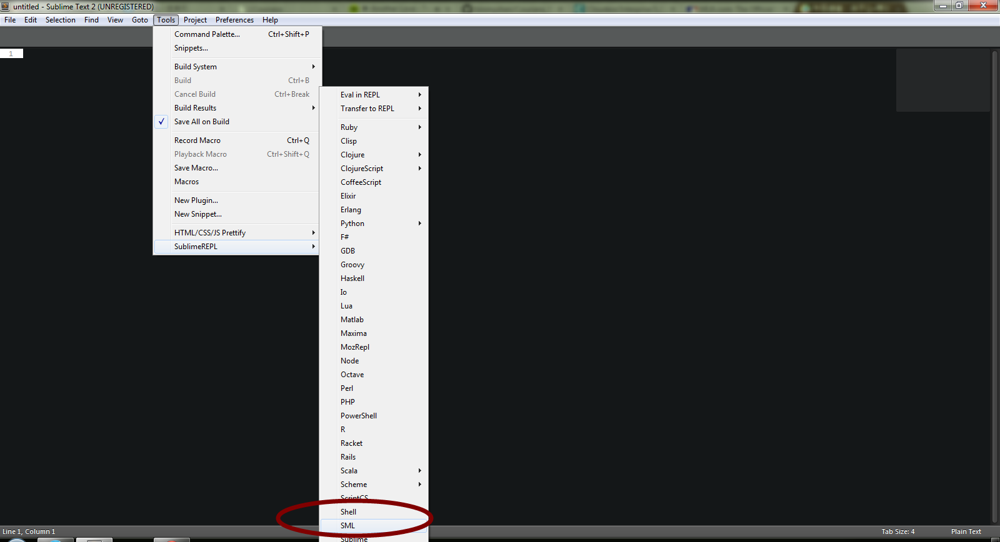
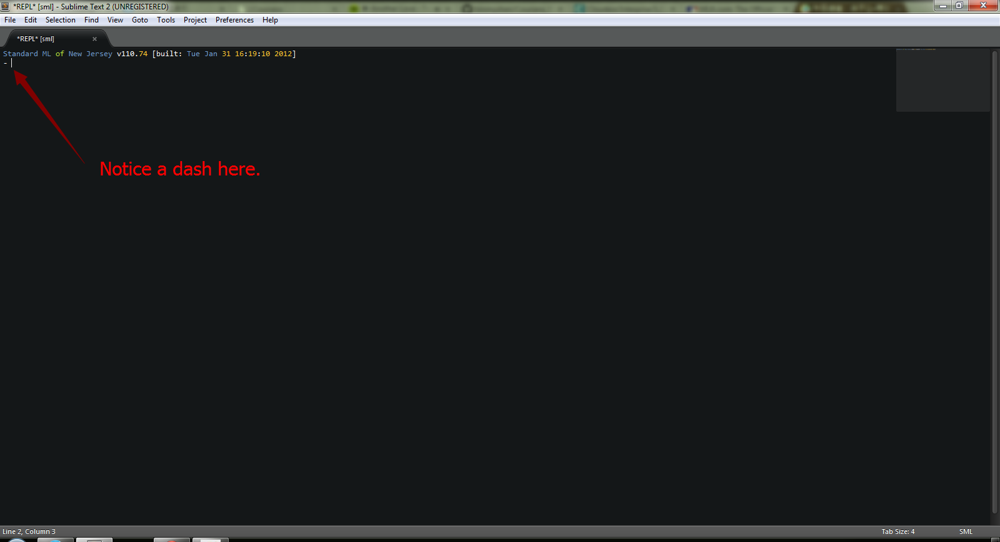
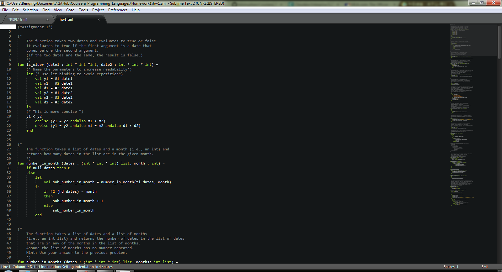
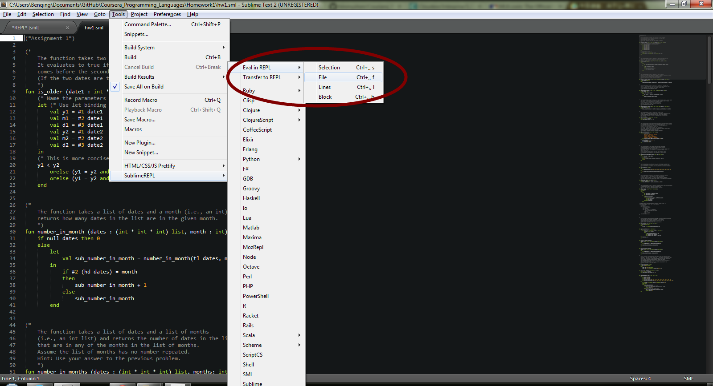
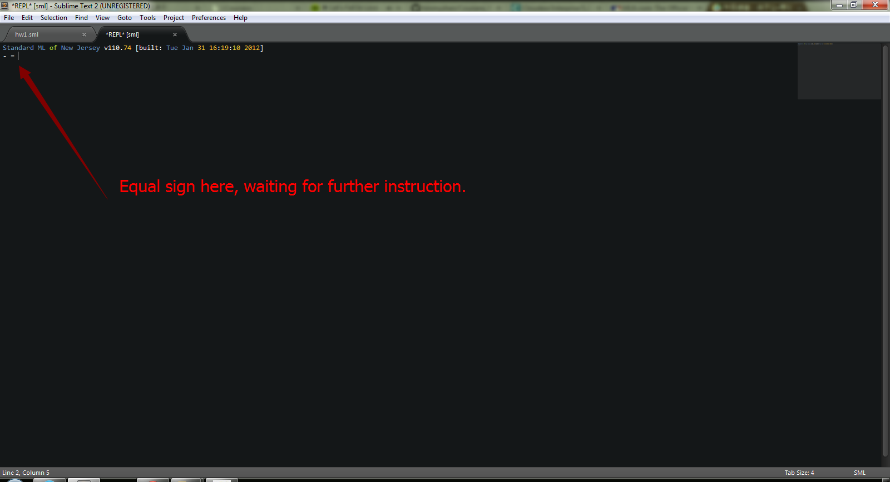
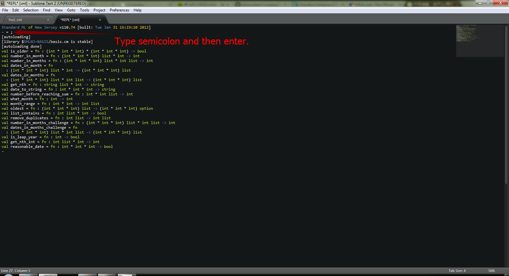

Introduction
The programming languages course provided by University of Washington and Coursera is one of my favorite. Not only I learned a lot from the course, but I also appreciated the way Dan taught the material. I'd recommend this course to anyone who is interested in pursuing a deeper understanding of programming languages.
However one thing that may trouble some students is the coding environment. Emacs is a fine choice and just like Dan said, it is worth learning and investing your time in. But someone may still want to program in a more "modern" environment, so to speak. This tutorial provides a step by step guide to how to set up the SML environment in Sublime Text 2.
Install Sublime Text 2 and package control.
Go to Sublime Text 2 official website and install it.
Go to Sublime Package Control website and follow the instruction to install package control.
After the previous steps, open sublime text and press ctrl + shift + p. Type install packageand you should see the following.
Install SML
Fow Windows users, download the installer smlnj-110.77 and run it. After installation, make sure sml is in the system path. One way to validate that is to run sml in cmd or powershell.
Install SublimeREPL
In Sublime Text, press ctrl + shift + pto bring up command palette. Search for install package and press enter. The search for SublimeREPLand press enter to install it.
When installation is done, a set of REPL tools should appear under Toolsmenu.
Click on SML in SublimeREPL and a familiar screen should be in front of you.
At this stage, you could play around in the repl to see if it functions properly. Don't forget the semicolon at the end of each expression, though.
Evaluate sml file in sublime repl.
Say you have worked on course homework and have finished your little script of first assignment. It's the time to see if you've done it correctly and passed the tests. Instead of using use "*.sml";in command line, we could send the script file to repl in sublime.
To do so, you need to open both the file and the repl, as shown in the above snapshot. Then, go to Tools -> SublimeREPL -> Eval in REPLand click on file.
Now switch to repl tab in Sublime and weirdly, you may see ABSOLUTELY NOTHING.
Well, actually if you stare at the screen long enough, you should see there's an equal sign there, signaling the expression is not finished yet.
All we need to do here is type in a semicolon and strike enter
Voila! Our script passes all tests and that's really awesome.